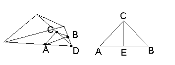
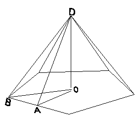

| What is the volume of a dodecahedron with an edge-length of a? |
The volume of a pyramid is the area of the base multiplied by its height divided by 3. We can calculate the height by the angle between the base and one of the surface sides. Since two pyramids are adjacent at every edge of the dodecahedron, we can find it by taking the angle between two adjacent sides of the dodecahedron and dividing it by 2.
To find that, let's take a corner of the dodecahedron, and form a triangle at the points which are at a certain distance along the edges. We get the following picture:

From point C, which is found somewhere along the edge, let's lower two
perpendiculars to the edge, down to the edges of the base triangle. We
get the triangle CAB. Now since the surface sides of this pyramid are
isoscles triangles, and the angle of a perfect pentagon is equal to
180°*3/5=108 degrees, then the angle CDA is equal to
(180°-108°)/2=36° degrees.
Since angle ACD is a right angle, we find that CA (and CB) is equal to AD * sin(36°), and since the base triangle is perfect, AB is equal to AD. Thus, we know that AE/CA = AB/CA/2 = AD/CA/2 = 1 / (CA/AD) / 2 = 1 / (2 * sin(36°)). Thus, the angle ACE, which is half the angle between two sides of the dodecahedron and the angle we seek, is equal to arcsin(1/(2*sin(36°))). (approximately 58.28°).
Now, let's take the look at a side pyramid of a dodecahedron and calculate its volume:

Since the angle of a perfect pentagon is equal to 108°, angle OBA
which is half of it is equal to 54°. Since AB is a/2, OA is equal to
tan(54°)*a/2. Now, the base of the pyramid is made of 5 equal
triangles each of which has a base of length a and a height of
OA. Thus, the area of the base is 5*(OA*a/2) =
5*tan(54°)*a/2*a/2 = 5/4*tan(54°)*a^2.
In the previous section we found out that the angle OAD is equal to arcsin(1/(2*sin(36°))), and therefore OD is OA * tan(arcsin(1/(2*sin(36°)))) = 1/2 * tan(54°) * tan(arcsin(1/(2*sin(36°)))) * a. The volume of the pyramid is the area of its base multiplied by its height (OD) divided by 3 and so it is equal to:
5/4 * tan(54°) * a^2 *
1/2 * tan(54°) * tan(arcsin(1/(2*sin(36°)))) * a *
1/3 =
5/24 * tan(54°)^2 * tan(arcsin(1/(2*sin(36°)))) * a^3
Since there are 12 such pyramids in a dodecahedron, its volume is equal to this volume multiplied by 12. Thus, we get that the volume of a dodecahedron is:
5/2 * tan(54°)^2 * tan(arcsin(1/(2*sin(36°)))) * a^3 = ~7.66 * a^3.